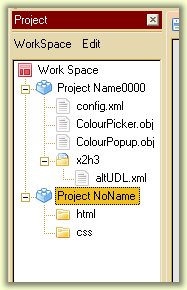

Abrir y guardar archivos:
apertura
Open ... es muy similar a cualquier otra aplicación de Windows:
- Para abrir un archivo, simplemente vaya a o presione . Aparece un cuadro de diálogo y puede seleccionar uno o más archivos para abrir. Se abrirá cada archivo en una pestaña individual. Si el archivo ya está abierto, Notepad ++ le mostrará este archivo en su estado actual. En el cuadro de diálogo, un filtro le permitirá mostrar sólo los archivos que pertenecen a un determinado idioma (como C ++ o PHP) basado en la extensión. Por defecto, se muestran todos los archivos. Si desea abrir más de 200 archivos, Notepad ++ le advertirá, en caso de que sea una maniobra incorrecta.
- Otra forma de abrir un archivo es arrastrar el archivo a Notepad ++ utilizando el cursor en la barra de título de la aplicación. Esto también se puede hacer con varios archivos o carpetas seleccionados juntos.
- Además, Notepad ++ mantiene una lista de archivos cerrados y no abiertos recientemente (en el menú ) que le permiten volver a abrirlos rápidamente. Simplemente haga clic en el nombre del archivo para abrirlo (vea la sección en la lista de archivos recientes para más detalles). Para abrir todos los archivos en esta lista, simplemente seleccione
.
permite restablecer esta lista). Si la lista está contenida en un submenú, estos dos comandos también están incluidos.
- Ver también la opción de línea de comando para ver cómo abrir archivos de esta manera.
registro
Guardar un archivo se puede hacer de varias maneras:
- El modo predeterminado es seleccionar o presione
. Si se trata de un archivo existente, se sobrescribirá con el contenido actual. Tenga en cuenta que si el archivo no se ha modificado, no puede guardar el archivo, la opción no es accesible.
- Si desea guardar todos los archivos que ha abierto a la vez, puede seleccionar
o presione
.
- Si el archivo es un nombre de cálculo (por ejemplo, si ha creado un nuevo archivo), o slectionn
, el cuadro de diálogo de aparece el archivo guardado, solicitando el nombre del archivo. Puede elegir la ubicación y el nombre del archivo. La extensión .txt se agrega si el nombre del archivo no tiene extensión. Agrega un punto para evitar este comportamiento.
- Una variante útil: . La diferencia con
es que su trabajo continúa en el nuevo archivo, no en el original.
- Filtro El filtro del cuadro de diálogo puede agregar o modificar automáticamente la extensión por usted. La extensión predeterminada estará en la parte superior de la lista de filtros.
copias de seguridad
Las copias de seguridad, que son opcionales, toman dos formas:
- Al guardar un archivo, puede pedirle a Notepad ++ que conserve una copia de seguridad. El nombre de esta copia tiene opcionalmente una marca de tiempo y se puede colocar en un directorio dedicado en lugar de junto al archivo guardado.
- Si las copias de seguridad y los registros de sesión están marcados, el contenido de todos los archivos abiertos en su estado inmediato (no registrado), así como la sesión que los describe, se guardarán a intervalos. Regular, configurable. Puede dar como resultado que su archivo de disco contenga el estado registrado más reciente, mientras que una instantánea más reciente existe en otro lugar, y aparecerá en el editor en su rd. apertura. Esto es particularmente útil si el programa está cerrado, pero puede ser sorprendente si está trabajando en el mismo archivo con otras herramientas que Notepad ++. Notepad ++ no le advierte sobre el cierre de archivos que no están registrados; debemos confiar en los iconos de estado en oglets.
Todas las opciones para controlar qué tipo de copia de seguridad está ahí y configuración de copia de seguridad están en la pestaña backupp en el cuadro de diálogo Preferencias
Otras operaciones relacionadas
Puede de archivos o si desea actualizar la vista actual del archivo (por ejemplo, si el archivo se ha modificado en el ínterin) es el contenido que es RRESET en el disco (si ha modificado el archivo, pero aún no se ha guardado). Si el archivo ha sido modificado en el disco de otra Manire en dcalage con el contenido de la memoria,
Notepad ++ le pedirá que de forma predeterminada si desea recargar (ver PRF cias para más detalles).
Por último, se puede optar por cambiar el nombre de un archivo seleccionando
de diálogo bote .A le pedirá el nombre de archivo nuevo, al igual que el cuadro de diálogo Guardar como. Sin embargo, el archivo original será eliminado.
El gerente del proyecto
Esta herramienta, en la forma de una ventana acoplable, permite la visualización en forma de árbol de conjuntos de archivos, y permite abrir uno por uno en la vista principal. Estas ventanas se abren mediante o n es 1, 2 ó 3. En una raíz llamada espacio de trabajo
puede encontrar proyecto s de sí mismos COMPOSS directorio y archivo s.

Cada elemento tiene un menú contextual. El espacio de trabajo también se muestra a través de WorkSpace , el de los otros elementos está disponible a través de Editar .
El espacio de trabajo
Cada espacio de trabajo está vinculado a un archivo que describe su contenido en la forma de una sesión. Entonces podemos nosotros:
- Vuelva a colocar el espacio
- Cargue un archivo de espacio
- Recargar archivo de espacio (para sobrescribir cambios no deseados)
- Guarde el estado del espacio
- Guarde en otro archivo de espacio y haga que se transmita
- Guarde una copia en un archivo de espacio (y continúe con la actual)
- Agregar un nuevo proyecto
La tecla Intro , así como un doble clic o un simple clic en el símbolo de retracción, si existe, cambia el estado de retracción del elemento.
En un espacio de trabajo, cualquier elemento se puede mover arrastrando y soltando, siempre que tenga sentido, mover un proyecto al centro de un sitio. directorio no tiene sentido. Además, un elemento puede moverse hacia arriba o hacia abajo en la categoría que lo contiene, seleccionando el elemento y luego usando las teclas Ctrl-Up .
arriba o Ctrl-Abajo hacia abajo.
Los proyectos
Puede cambiar el nombre o eliminar un elemento a través del menú contextual o agregarle directorios y archivos. El cambio de nombre también se puede hacer haciendo clic en la etiqueta, a la manera del explorador de archivos de Windows. La tecla Eliminar también elimina el elemento.
El comando
permite elegir un directorio. Una vez hecho esto, todos sus archivos se agregan al proyecto y todos sus directorios se agregan como directorios de proyectos.
Los directorios
Los mismos comandos están disponibles. Un directorio es un contenedor simple, no está vinculado a un directorio de su sistema de archivos, incluso si se han agregado mediante el comando .
Archivos
Un archivo en el espacio de trabajo se refiere al archivo correspondiente en su computadora. Los mismos comandos están disponibles, excepto
; Falla no tiene un símbolo de retracción. Sin embargo, puede cambiar la ruta completa del archivo a través de archivo
; esto le permite cambiar de una versión a otra cuando se encuentran en diferentes directorios en su computadora. La tecla Intro o un doble clic abre el archivo en la vista activa.
Si un nombre de archivo no coincide con un archivo real, su icono está sobrecargado para señalar ese hecho, y no puede abrirlo.
Texto original
Sugiere una traducción mejor